| Ok,
me re-voilà!!
On est présentement samedi et c'est maintenant ma troisième
journée ici!!! Mon premier e-mail que j'ai envoyé je l'avais
écris à la fin de la première journée chez
Steph, mais je viens tout juste de l'envoyer, comme c'est ma première
fois dans un café internet. Je pourrais me connecter de chez Steph
mais ca me prends ses login et tout et elle ne les connais pas. Je me
suis acheté une carte WiFi sans fil pour mon portable mais malheureusement
y'A pas l'air d'avoir de zone d'Accès près de chez Steph.
Même ici à Waikiki y'en a pas. Je suis décu mais c'est
pas grave, ma carte va me servir plus tard. Y'en a pas à québec
pis c cher les commander.
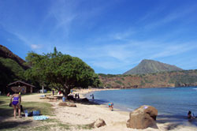 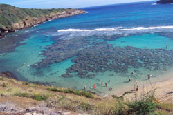
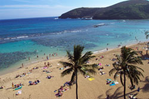
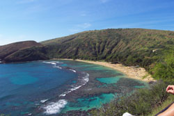
Hier on est allés à Hanauma Bay comme prévu, pour
faire du snorkling (nage avec lunettes de plongée et tuba)... J'ai
du mal à trouver les mots pour décrire ce que j'ai vécu
là-bas. Premièrement, l'endroit est hallucinant. On a visionné
un petit film sur l'endroit avant de s'y rendre (c'est obligatoire, pour
préserver la nature) Et ils nous expliquent comment la baie a été
créée... Au départ c'était un énorme
volcan sous-marin en éruption et la baie se trouve à être
le cratère en soi. L'endroit est magnifique, l'eau est claire comme
de l'eau de source et on peut y observer pleins d'espèces de poissons
et de coraux vivants. Le film nous indique qu'on ne doit pas toucher ni
marcher sur les coraux ni les poissons. On ne doit pas les nourrir non
plus. C'est normal, le respect que les touristes donnent à l'endroit
a fait en sorte qu'on peut observer ce que j'ai vu. Moi qui ne sait pas
nager, je n'aurais jamais, jamais, jamais cru pouvoir observer quelque
chose de si incroyable dans ma vie. La baie n'est vraiment pas creuse
alors j'étais dans moins de 3 pieds d'eau et je n'ai jamais vu
autant de poissons et de coreaux de toute ma vie. C'était incroyable!!!
Au début j'était un peu nerveux et stressé et ca
me faisait un peu peur de garder ma tete longtemps dans l'eau, mais après
seulement quelques minutes j'ai compris le truc et comment respirer avec
le tuba, et je nageais librement au dessus des coreaux et avec mes amis
les poissons!!! J'en ai vu, de toutes les couleurs, de toutes les grosseurs,
c'était hallucinant. Comme je disait, il n'y a même pas de
mots pour décrire ce que j'ai vu!!! Incroyable. Des fluorescents.
Des énormes, des bancs. Une fois j'ai passé littéralement
dans un banc de poissons, il y en avait sûrement une centaine!!!
C'était vraiment beau. Je pouvais les toucher, facilement, mais
évidemment je ne l'ai pas fait. J'ai nagé comme ca pendant
une heure ou deux, sans presque jamais sortir ma tête. J'étais
rendu un poisson, c'était assez incroyable. Ils ne s'occupent même
pas des humains car ils sont habitués à nous. C'est génial.
C'est comme être dans un aquarium d'eau salée géant
qui vaut des millions de dollars. J'ai ADORÉ cette expérience.
Au mexique je crois que j'avais vu quelque chose comme 3 poissons!! Évidemment
j'étais pas allé très loin mais cette fois, j'avais
même pas besoin de savoir nager. C'était fabuleux. J'en ai
encore des frissons d'ecstase.
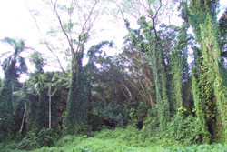 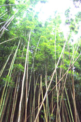
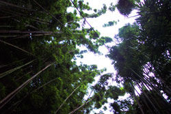
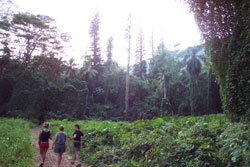
Ensuite nous sommes allés réserver nos billets d'avion pour
aller passer noel à faire du camping sur l'ile de Kawaii. Puis
nous sommes allés prendre une marche d'une demi-heure environ dans
la foret tropicale!!!! Woah. Ca aussi, c'était à couper
le souffle. Le décor était digne de Jurassic Park. Les lianes
partout, et nous sommes parvenus jusquà une foret de bambous...
Ca aussi c'était vraiment beau. Comme dans le film tigre et dragon
quand ils courent et montent sur les arbres de bambou. Superbe!
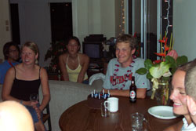 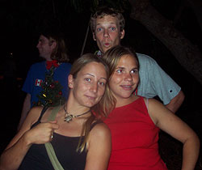
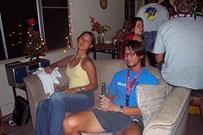
La soirée s'est bien terminé chez Stéphanie qui avait
organisée un party pour son coloc qui partait en fin de semaine.
Il y a eu une trentaine de personnes sûrement, tout le monde était
super sociable et j'ai jasé avec pas mal tout le monde. C'était
chouette!!! J'ai par contre bu un peu trop de bières, ce matin
j'ai eu un petit mal de tête désagréable, mais maintenant
ca va beaucoup mieux. Il est maintenant midi et je suis allé me
promener dans Hawaii avec le vélo à Stéphanie. Je
crois que je vais faire ca souvent, c'est vraiment l'fun!!! Ici tout le
monde est super sympathique, c'est vraiment pas stressant de partir en
vélo, je peux toujours demander aux gens vers ou je dois aller,
et ils s'arretent et me jasent pendant plusieurs minutes, c'est vraiment
cool. Je suis allé me promener sur le bord de la beach à
Waikiki et je fais plaisir à mes yeux à regarder toutes
les jolies japonaises partout!!! D'ailleurs y'en a une tantot qui marchait
seule toute lunatique, j'aurais dû lui parler, avec le beau sourire
qu'elle m'a fait. Bon, pas de stress, je suis ici pour un mois et tout
le monde est tellement sociable j'ai encore bien des occasions pour socialiser
avec les jolies gonzesses!!! C'est cool j'ai trainé mon portable
dans mon sac à dos avec moi et le gars du café internet
est ben cool il m'a laissé me plugger sur le réseau avec.
Maintenant mon heure est terminée alors je crois que je vais retourner
me promener en vélo et mater les gonzesses!!!
Huguette et Marcelle sont partis faire les puces ce matin, Steph m'a laissé
son numéro de cellulaire et je vais l'appeler tantot pour voir
ce qu'elle fait et si elle a des nouvelles d'Huguette. Je suis juste à
coté de la beach ici, je crois que je vais aller me baigner un
peu tantot et l'on devrait se donner rendez-vous quelque part sur la plage
pour profiter de la bonne eau chaude!! Il fait super beau aujourd'hui,
gros soleil et une chaleur parfaite! Anyways ca semble être toujours
comme ca ici!!
Voici quelques autres photos que j'ai prises de l'arrière du pickup
à Stéphanie en m'en allant à Hanauma Bay! Y'a juste
3 places en avant alors je dois me contenter de la place en arrière...
Mais en fait ca me déranges pas, j'aime ca, je fais des bye-bye
aux gens dans leurs autos :)
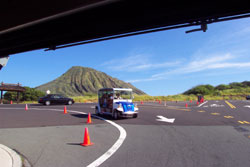 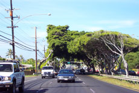
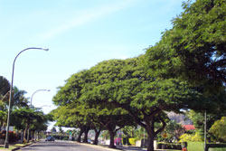
Bon, je vous laisse, ca fait un petit bout de temps que je suis au café
internet, ca va me couter cher pour rien. J'aurais dû préparer
ce courriel chez Steph comme le premier, comme ca j'aurais juste eu à
l'envoyer. Mais bon c'est pas grave. C'est super pratique mon portable,
je peux prendre le temps d'insérer les photos et tout. Maintenant
je vais continuer ma ride en bike et peut-être prendre des photos
un peu encore!! En passant par rapport aux photos, ici j'en mets juste
quelques unes sinon ce serait trop lourd, mais inquiétez-vous pas
j'en ai des millions d'autres que j'ai hâte que vous voyez aussi!!
Bon, Prenez soin de vous.. et inquiétez vous pas pour moi, ca fait
longtemps que je me suis pas senti aussi bien!!! =)
Marcel: J'ai pas bocou de temps pour aller sur internet alors trouves-moi
une place ou y'a une caméra et j'irai me planter devant à
l'heure demandé, si je le peux.. :) J'en profiterai pour aborder
de jolies gonzesses et je leur demanderai de poser avec moi!! =) heheheh..
Enfin, on verra ce que je peux faire :)
Ciao!!
David xx
Partie
3 -->
|